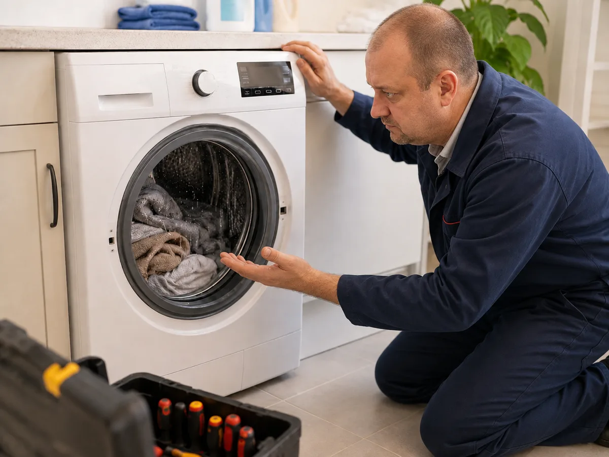
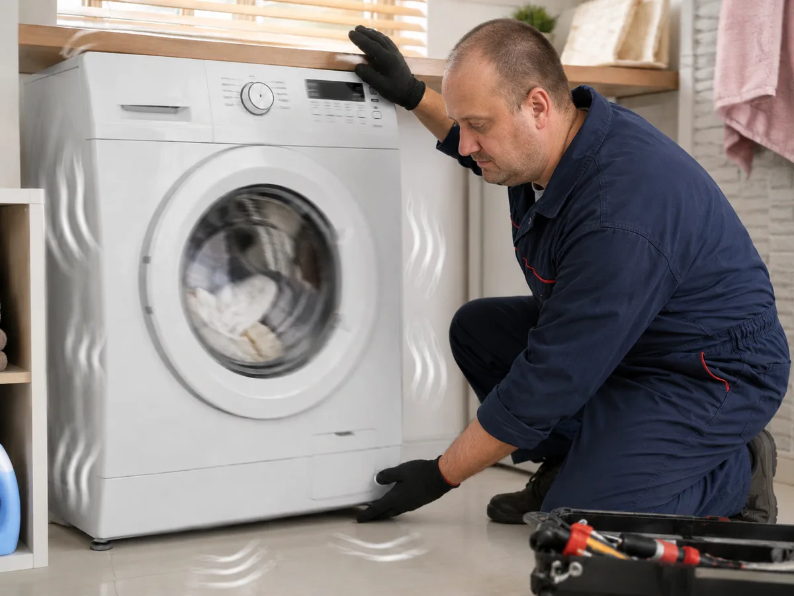

Цены · Харьков
Прайс-лист на ремонт стиральных машин в Харькове
Стоимость ремонта зависит от модели стиральной машины, сложности доступа к детали и характера неисправности. Перед началом работ мастер проводит диагностику и согласует цену.
Популярные работы
- Вызов мастера — 700 грн
- Замена ТЭНа — 1400–1900 грн
- Замена сливного насоса — 1500 грн
- Замена УБЛ — 1700 грн
- Замена подшипников — от 4000 грн
Полная таблица цен
Цены указаны за работу. Стоимость запчастей зависит от бренда и модели стиральной машины.
| Название операции | Цена |
|---|---|
| Вызов мастера на дом | 700 грн |
| Диагностика стиральной машины | 600 грн |
| Подключение стиральной машины | 1500 грн |
| Чистка фильтра стиральной машины | 1000 грн |
| Устранение засора в стиральной машине | 900–1400 грн |
| Извлечение постороннего предмета без разбора | 1100 грн |
| Извлечение постороннего предмета с разбором | 1400 грн |
| Замена сливного шланга | 1200 грн |
| Замена заливного шланга | 900 грн |
| Замена сетевого шнура | 1100 грн |
| Замена кнопки включения | 1400 грн |
| Замена ручки люка | 1500 грн |
| Замена петли люка | 1500 грн |
| Замена стекла люка | цена договорная |
| Замена замка люка / УБЛ | 1900 грн |
| Замена манжеты люка | 1300–2300 грн |
| Устранение течи | 1000–1600 грн |
| Замена ТЭНа | 1900–2200 грн |
| Замена датчика температуры | 1400 грн |
| Замена сливного насоса / помпы | 1800–2300 грн |
| Замена заливного клапана | 1900–2200 грн |
| Замена прессостата / датчика уровня воды | 1700 грн |
| Замена приводного ремня | 1700 грн |
| Замена щёток двигателя | 1800 грн |
| Ремонт двигателя | уточняется |
| Замена амортизаторов | 1800–2200 грн |
| Замена пружин бака | 1700 грн |
| Ремонт платы управления | 1900–3000 грн |
| Замена платы управления | 2000 грн |
| Ремонт модуля управления | цена договорная |
| Замена селектора программ | 1800 грн |
| Замена подшипников в разборном баке | 4500 грн |
| Замена подшипников в неразборном баке | 5400 грн |
| Замена крестовины барабана при снятом барабане | 800 грн |
| Замена шкива барабана | 1800 грн |
| Замена бака | 3000 грн |
| Замена барабана | 3000 грн |
Окончательная цена согласуется после диагностики. Если ремонт сложный или требуется редкая запчасть, стоимость может отличаться.
Как выглядит диагностика и ремонт
Мастер проверяет узлы стиральной машины, объясняет причину поломки и согласует стоимость до начала ремонта.


Хотите уточнить стоимость?
Оставьте заявку и опишите проблему. Мастер подскажет возможную причину и ориентировочную цену.